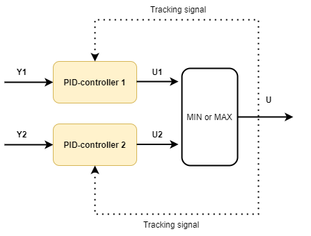

min/max select and tracking
Note
Work-in-progress, this article is currently a stub. Tracking signals need to be added, the treatment of tracking signals inside pidcontroller.cs needs to be reviewed, and the how to initalize a system that included select-blocks need to be reviewed.
.
var processParameters = new DefaultProcessModelParameters
{
WasAbleToIdentify = true,
TimeConstant_s = 30,
ProcessGains = new double[] { 1 },
U0 = new double[] { 50 },
TimeDelay_s = 5,
Bias = 50
};
var pidParameters1 = new PIDModelParameters()
{
Kp = 3, //high-gain
Ti_s = 20
};
var pidParameters2 = new PIDModelParameters()
{
Kp = 0.5,//low-gain
Ti_s = 20
};
var process
= new DefaultProcessModel(processParameters, timeBase_s, "Process");
var pid1 = new PIDModel(pidParameters1, timeBase_s, "PID1");
var pid2 = new PIDModel(pidParameters2, timeBase_s, "PID2");
var minSelect = new Select(SelectType.MIN,"minSelect");
var sim = new ProcessSimulator(timeBase_s,
new List<ISimulatableModel> { process, pid1, pid2,minSelect });
// tracking and min select-related
sim.ConnectModels(process, pid1);
sim.ConnectModels(process, pid2);
sim.ConnectModels(pid1, minSelect,0);
sim.ConnectModels(pid2, minSelect,1);
string selectSignalID = sim.ConnectModels(minSelect, process);
sim.ConnectSignal(selectSignalID,pid1, (int)PIDModelInputsIdx.Tracking);
sim.ConnectSignal(selectSignalID,pid2, (int)PIDModelInputsIdx.Tracking);
sim.AddSignal(pid1, SignalType.Setpoint_Yset, TimeSeriesCreator.Constant(50, N));
sim.AddSignal(pid2, SignalType.Setpoint_Yset, TimeSeriesCreator.Constant(50, N));
sim.AddSignal(process, SignalType.Distubance_D, TimeSeriesCreator.Step(300, N, 0, 1));
var isOK = sim.Simulate(out var simResult);
Plot.FromList(new List<double[]>
{
simResult.GetValues(process.GetID(),SignalType.Output_Y_sim),
simResult.GetValues(pid2.GetID(),SignalType.Setpoint_Yset),
simResult.GetValues(pid1.GetID(),SignalType.PID_U),
simResult.GetValues(pid2.GetID(),SignalType.PID_U),
simResult.GetValues(minSelect.GetID(),SignalType.SelectorOut),
},
new List<string> { "y1=y1", "y1=y_set", "y3=u_pid1", "y3=u_pid2","y3=u_select" }, timeBase_s, "MinSelectEx");